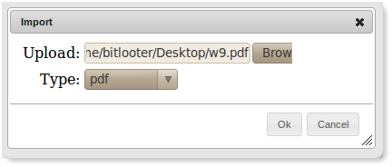

Binders
Using Binders
All workspace content is organized into binders, these binders can have pages.
- Create New Binder
- Rename Binder
- Delete Binder
- Distribute Binder
- Make System Welcome
- Import into Binder
- Submit Binder
Create New Binder
-
Right-click on your name in the navigation panel to reveal menu options:

-
Enter a name for your binder and click the ok button:

-
The new binder will be created with a default page as shown below:

Rename Binder
-
Right-click on the binder in the navigation panel to reveal menu options:
- Select "Rename".
Delete Binder
-
Right-click on the binder in the navigation panel to reveal menu options:
- Select "Remove".
Distribute Binder
A binder can be distributed to other group members. In distributing a binder, a new copy of the binder and its pages, including the content of those pages would be create for each member selected as a recipient of the distribution.
-
Right-click on the binder in the navigation panel to reveal menu options:
- Select the "Distribute".
-
Select all the recipients you wish to distribute the binder to:
-
Once distribution is complete, each selected recipient would now have a copy of the binder in its
entirety.
Note that only sysadmin or participants with educator role or the creator of a group can distribute a binder.
Make System Welcome
This feature is available only to sysadmin. It allows for setting the binder as the default binder for all newly created accounts. That is, instead of the default blank page, a new user for instance may be provided with tutorials or any other relevant group information.
-
Right-click on the binder in the navigation panel to reveal menu options:
- Select the "Make System Welcome".
- New users will now get a copy of this binder as their default binder.
Import into Binder
Content can be imported into a binder. Specifically, MS-Word, MS-Powerpoint and PDF documents can be imported into a binder.
-
Right-click on the binder in the navigation panel to reveal menu options:
- Select the "Import Office/PDF Document".
-
Select the file you wish to import and select the correct type:
 -
Upon completion the imported pages or slides would be listed under the binder:

Submit Binder
A binder can be submitted as a completed task into the tasks queue. For instances a binder could contain a completed assignment.
-
Right-click on the binder in the navigation panel to reveal menu options:
- Select the "Submit".
-
Select the task/assignment to which you wish to submit the binder: